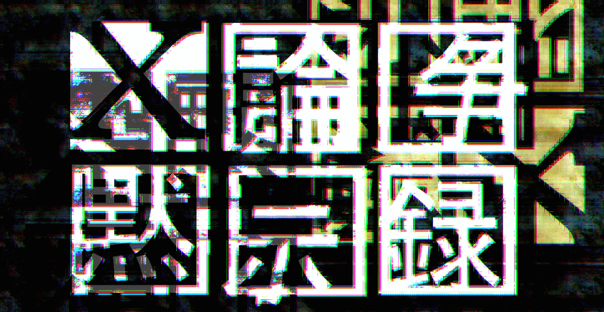

Ｘ論争黙示録

概要
注意
目次
概要
2005年に刊行された東野圭吾『容疑者Ｘの献身』は本格ミステリか否かという問いに端を欲する論争について、主に『ミステリマガジン』誌上の討論内容を中心にまとめました。
注意
目次
概説編
はじめに
主な経緯
発端となった主張とネットでの論争
誌上論争への移行
ネットでの論争再発
そして終結へ
補遺
年表
追跡編
はじめに
Ｘは本格ミステリか
二階堂黎人の主張
探偵役は謎を論理的に解いたか
読者は謎を論理的に解けたか
二階堂黎人の再反論
考察
Ｘは優れた本格ミステリか
「難易度の低さ」への批判
「難易度の低さ」批判への反論
本格ミステリとエンターテイメントの中間的な位置づけ
本格ミステリとの関係性から「純愛」を読み解く
本格ミステリとの関係性から「純愛」を読み解くことへの批判
考察
論考編
はじめに
笠井潔の主張とそれに対する反論
探偵小説精神の喪失
環境管理社会の小説的模型
笠井潔への反論
二十一世紀社会への抵抗としてのＸ
二重の光輪は誰に捧げられたか
二一世紀の人物像
善意に圧殺される妄想家
評論編
はじめに
評論に定義は必要か
二階堂黎人の指摘
定義の要求に対する反応
考察
評論はどうあるべきか
相対化が生む排除
評論とはなにか
考察
遁走編
はじめに
おわりに